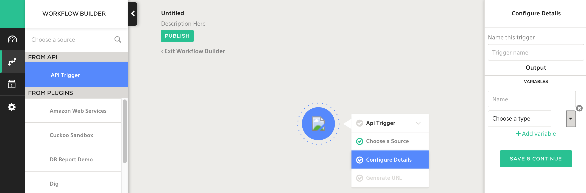

SDK Guide¶
Writing your Plugin¶
The following sections document things you need to know to develop quality plugins.
Version¶
We have Python 2.7 and 3.4 SDK images.
In your plugins Dockerfile, you can change the tag to match the version of python. Use python-plugin:0.2 for Python 2.7; python-plugin:0.3 for 3.4:
$ head -n 1 Dockerfile
FROM komand/python-plugin:0.2
Plugin Generation¶
As decribed in the SDK Spec document, plugin skeletons are generated by komand plugin generate python plugin.spec.yaml. Regenerating the skeleton by running the command will overwrite the existing configuration so be sure to save your work. This usually means copying the code you added e.g. in the run method to a different location.
If you decide to modify your plugin’s scheme, by editing plugin.spec.yaml, you’ll need to regenerate the plugin skeleton or you can manually add the JSON schema to the appropriate files.
For example, say you decide to add a new input variable called option to the finger action in the finger plugin. You need to edit Input class like so.
--- code_examples/go/sdk_plugin_generation.old
+++ code_examples/go/sdk_plugin_generation.new
@@ -1,3 +1,4 @@
type Thing struct {
User string `json:"user"`
+ Options string `json:"options"`
}
--- code_examples/yaml/sdk_plugin_generation_spec.yaml.old
+++ code_examples/yaml/sdk_plugin_generation_spec.yaml.new
@@ -2,6 +2,10 @@
type: "string"
description: "Finger server host"
required: true
+options:
+ type: "string"
+ description: "Options to the finger program"
+ required: false
output:
found:
title: Found Status
Once edited, you can build the new plugin with make. The metadata section is the only section in the plugin.spec.yaml where changes don’t need to be made outside of the plugin.spec.yaml file, they’ll take effect after running make.
Required Variables¶
In go, the generated code will contain a strongly-typed output structs based on the plugin spec. Thus, you can only ever return things that are defined as output parameters in the spec. If you need to return more than these fields, you must add them to spec, and regenerate the plugin.
Presently, you cannot omit any values from the output, only leave them at their zero values.
As a reminder, the zero value of a map or an array / slice in go is a nil pointer, and not an “empty” map or array / slice, so plan accordingly.
You can inspect the output an action in the Jobs page

Parameters¶
Actions¶
Input variables defined in the plugin.spec.yaml file are available in an autogenerated, strongly typed struct, named after the action. For example, MyPluginAction. You can then access the variables as fields inside the autogenerated Act() method on that struct:
func (a *MyPluginAction) Act() error {
thing := a.MyField
}
Triggers¶
Triggers are long running processes that poll for / emit a new event and then send the event to the Komand engine to kick off a workflow. Because of they’re how workflows get fed data, all workflows in Komand start with a trigger.
Unlike Actions, Triggers do not return anything based on their input - instead, they perform some operation based upon it, then ferry it to the engine.
If triggers were configured via the spec, they will be present at
<plugin_name>/triggers/<trigger_name>.go
Code¶
Trigger code should be placed in the body of the trigger run loop.
You can adjust the timer to suit the plugins needs. By default, it emits an event every 5 seconds.
The t.Send() method accepts the autogenerated TriggerOutput struct, which is used to pass the struct to the Komand engine to kick off a workflow. This struct is then available to other plugins
// RunTrigger will run the trigger forever, emitting events until stopped.
func (t *MyPluginTrigger) RunTrigger() error {
for {
var output MyPluginTriggerOutput
output.Stuff = "Hi!"
t.Send(&output)
time.Sleep(time.Duration(t.input.Interval) * time.Second)
}
}
Testing Triggers¶
Testing triggers using Docker requires the use of the –debug option otherwise the trigger will fail due to attempts to post events to an http URL that’s not available.
Connections¶
You also need to access the connection variables in the RunTrigger() and Act() methods to get the connection info. You can access it via the conn field (returns a value), or the Connection() helper function (returns a pointer) attached to the Action or Trigger struct
func (t *MyPluginTrigger) RunTrigger() error {
c := &t.conn
c2 := t.Connection()
}
func (a *MyPluginAction) Act() error {
c := a.conn
c2 := a.Connection()
}
Logging¶
Log informational messages including warnings and errors, they’re displayed to the user in the Log section of the Job Output.

Informational logging can be done via the logging helpers. A few examples are below.
Additionally, any returned errors will be logged, however this will cause the plugin to fail. See Errors
log.Printf("connecting")
return errors.New("this is an error")
return fmt.Errorf("this is an error")
Errors¶
Returning errors is how we cause plugins to abort. We want them to abort when something goes wrong so the workflow doesn’t continue.
You can return an error from anywhere in the plugin:
return errors.New("this is an error")
return fmt.Errorf("this is an error")
For error handling, we should handle exceptions from the methods and functions in go libraries. We then log a detailed message, and raise an exception to abort.
Example for handling errors from a URL request:
resp, err := http.Get(url)
if err != nil {
log.Printf("Tried to call %s but got %s",url, err.Error())
return err
}
Cache¶
Plugins can use persistent storage for caching files using the enable_cache: true in the metadata section of plugin spec file.
/var/cache can then be used for storage across all the plugin’s containers but not in containers of other plugins. For plugins that download files from the internet, it makes it easy to check if the file already exists in the cache.
TODO GO
Tests¶
The test method is used to provide tests of the plugin by returning JSON. It should be completed with practical test(s) of plugin functionality. Raising an exception will cause the test method to fail.
// Test will run the plugin test.
func (a *MyPluginAction) Test() (plugin.Output, error) {
// TODO: run test and return error if failure.
output := MyPluginActionOutput{}
return &output, nil
}
Tests are executed in the Komand WUI after configuring a plugin. A log of the JSON output is also viewable.


The user parameters are available in the method as well.
If the plugin is simple enough: * It doesn’t present a rate limiting issue * It executes quickly
You can have the test method call the run method.
// Test will run the plugin test.
func (a *MyPluginAction) Test() (plugin.Output, error) {
// TODO: run test and return error if failure.
err := a.Act()
return &a.output, err
}
Testing Examples: * Successful connections to API or service * Validating known output of command
Example for testing the slack plugin is to simply generate and return a sample output payload object, like so
// RunTest will run the plugin test.
func (a *SlackPostMessageAction) Test() (plugin.Output, error) {
output := SlackPostMessageActionOutput{}
// Do some stuff to mock up the output object with fake data, or even call a.Act()
return &output, nil
}
Verifying¶
Before committing the plugin, always verify that the functionality works to the top of the stack. Plugins should be user friendly and the best way to test and figure out if your plugin meets those requirements is to get it working in Komand product. All developers should do this.
You can import the plugin via the command-line with komand plugin register <plugin.tgz> or using the web interface
described below.

Open up the web interface https://127.0.0.1:8888 for the Vagrant config
Authenticate
Settings -> Import A Plugin
Choose the tarball that the makefile generated
Create a Workflow to use it, it’s easiest to use the API Trigger to kick it off.

Publish the workflow
Start the workflow by executing the CURL command with the necessary inputs
curl -X POST -d '{"blah": "things", "blah2": "morethings"}' http://127.0.0.1:8080/v2/workflows/46/events?api_key=<YOUR_API_KEY>Check the closed jobs for the results
Make sure everything makes sense especially the text used to described the plugin, its input, and outputs.
Functions¶
Functions are top level objects that aren’t attached to anything
Use good programming practices such as breaking the program into smaller functions. This makes the plugins more readable and manageable.
Golang plugins are expected to adhere to established golang community standards where possible.
For example, errors should never be ignored (unless you’re absolutely certain the error is safe to ignore), the code should pass go-lint and go-vet, and have been run through gofmt, etc.
Utility functions that only need to be used in a given package (actions or triggers, for example) should only exist within that package.
Utility functions that need to be shared should be placed into a top level package as a sibling to packages like actions and triggers, and imported from there. In general, you should strive to make utility functions reusable only when they actually need to be reused outside of a given scope.
Methods¶
Methods are functions that are attached to an object, as opposed to available freely in the global scope. The main difference here is that Methods are able to access the local (and potentially private) state of the object they’re attached to.
As with functions, use good programming practices such as breaking the program into smaller pieces. This makes the plugins more readable and manageable.
As of now, defining custom methods on something comes with a caveat: These changes will be lost upon using the regenerate command.
At present, the recommended solution to this is to commit custom methods in a separate file to git, run make regenerate, then
run git checkout — my_lost_file
Running Plugins¶
To quickly test a plugin, you can invoke them via docker as below:
Run these in your plugins directory e.g. plugins/myplugin
make
docker run -i komand/myplugin sample <action> > test.json
docker run -i komand/myplugin test < test.json
Helper Library¶
The SDK provides some simple builtin utility functions, which are defined below. You can use these in any of the hooks for running or testing actions and triggers in the generated code